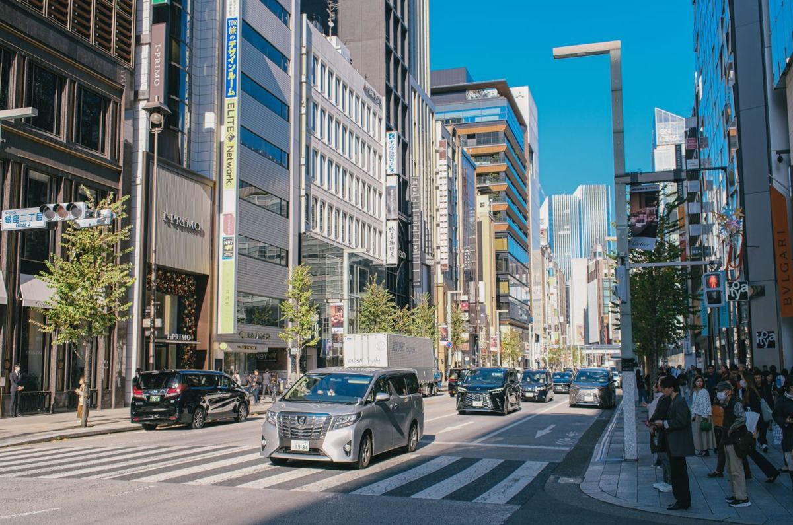
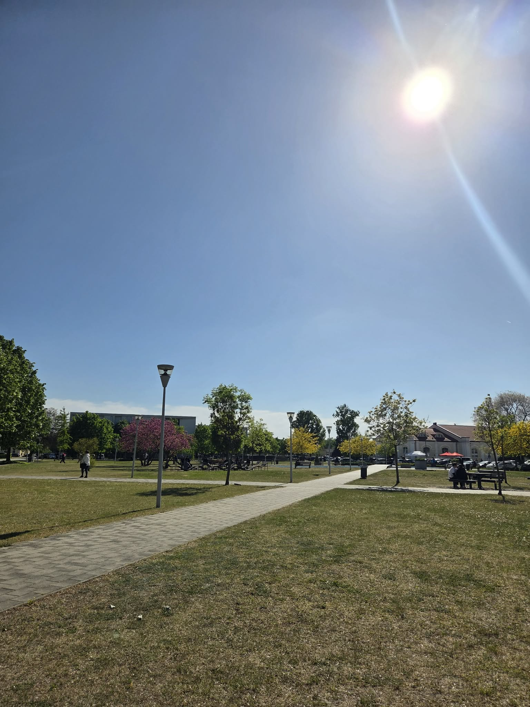
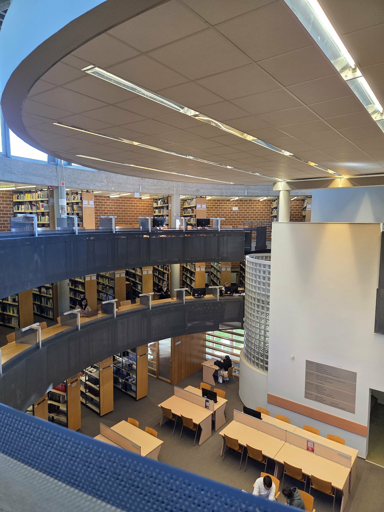
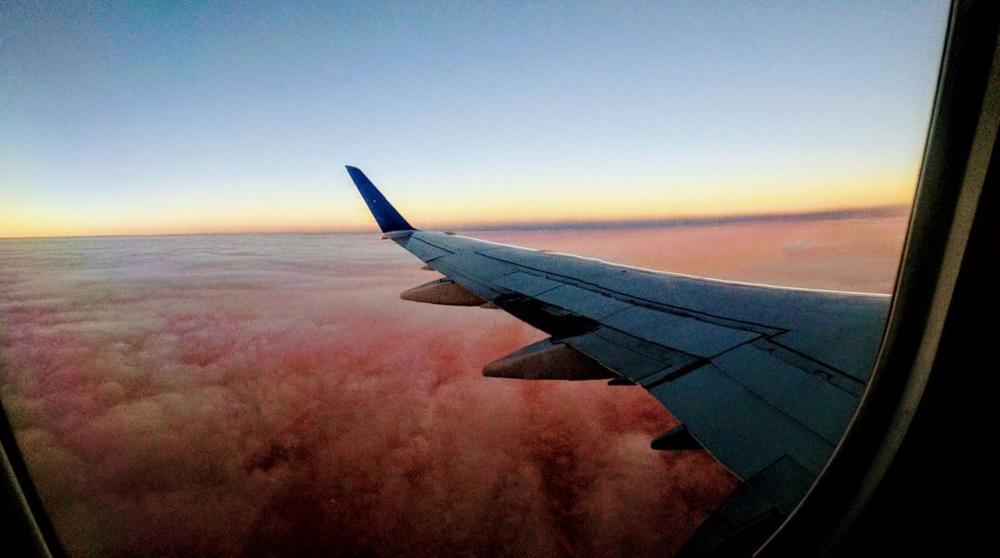

「海外で働きたい」から「日本最高！」へ？ハンガリー留学で変わった僕の価値観とリアルな成長【デブレツェン大学CS専攻】
みなさんこんにちは、ユウゴです！
「海外留学をしたら、きっと人間的に大きく成長して、毎日ストイックに勉強する自分に生まれ変われるはず…！」
渡航前、みなさんもこんな期待や理想を抱いていませんか？
今回は、元々「中途半端な自分」だった僕が、ハンガリーのデブレツェン大学に来て実際に変わったこと・変わらなかったこと、「海外志向」から「日本最高！」へと変化した価値観のリアルについて、包み隠さず本音でお話しします！
1. 時間管理のリアル：渡航直後のロケットスタートと、現在の誘惑
渡航前までの僕は、毎日をなんとなくダラダラ過ごしてしまい、朝に「今日はこれをやろう」と予定を立てても結局何もできずにスマホを見て1日が終わる…というようなタイプでした。
そんな僕ですが、渡航直後は意識がガラッと変わり、自発的に授業の復習をしたり、ビジネスの勉強を始めたりとかなりアクティブに動き出すことができました！
……と言いつつ、現地の生活に慣れてきた現在はというと、正直また日本にいた時と同じようにダラダラしてしまう時間が増えてきています（笑）。
大学は高校のように毎日朝から夕方までびっしり授業があるわけではないので、「空き時間をどう使うか」がすごく重要です。僕の場合は家で過ごすことが多いのですが、YouTubeやNetflixなどの誘惑に負けてダラダラしてしまうこともあります。
もちろんテスト前や日頃の復習もやりますが、やっぱり最初は張り切っていても「意識して継続する」のは簡単ではありません。海外に来たからといって、自動的に完璧な人間になれるわけではないというのがリアルな実感です。
2. 価値観の大変化：「海外で働きたい」から「日本で働きたい」へ

留学して僕の価値観の中で一番大きく変わったのは、「日本の素晴らしさに気づいたこと」です。
渡航前の僕は、どちらかというと「日本の文化より海外文化の方がかっこいい！」と思っていて、海外生活にすごく憧れていました。将来も「絶対海外で働きたい」と考えていたんです。
しかし、いざハンガリーでの生活が始まると、日本との違いやギャップを肌で感じ、「食文化の美味しさ」や「人々の思いやり・気遣い・配慮の細やかさ」など、海外に出たからこそ日本の凄さを痛感することが増えました。
その結果、あんなに海外志向だった僕の軸が、今では「やっぱり日本で働きたい！日本が一番最高！」という意思に180度ガラッと変わりました。
人と比べなくなり、「自分の軸」が強くなった

一方で、海外生活を通じて精神的にすごくラクになった部分もあります。それが「人と比べなくなったこと」です。
様々な国から来た同級生たちと過ごす中で、みんなそれぞれの国柄や人生の価値観、時間の使い方を持っていて、「他人は他人、自分は自分」という空気感があります。
日本にいる友達と連絡を取ると焦ることもたまにありますが、少なくともハンガリーで生活している間は、他人と自分を比べることは一切なくなりました。自分の意見や意思を強く持てるようになったという意味では、ブレない軸が育っていると感じます。
3. 誇れること：英語力最低レベルの凡人でも「なんやかんや耐えている」こと

留学前の自分と比べて「ここが成長したな」と誇れる部分を挙げるなら、「なんだかんだ挫折せずに耐えて、生活を継続できていること」です。
僕は特別な天才でもなければ、最初から英語がペラペラだったわけでもありません。ぶっちゃけ「最低レベルの英語力」で渡航してきたごく普通の凡人です。
それでも、英語での講義に食らいつき、なんやかんや単位を取り、外国人の友達を作り、海外で一人暮らしをして日々の生活を回している。
これまで中途半端に生きることが多かった僕にとって、海外という環境で逃げずにずっと頑張り続けられている現状そのものが、小さな誇りであり自信になっています。
4. 留学を迷っているあなたへ：一番のハードルは「決断」だけ

「自分に海外生活ができるか不安」「自己管理ができる自信がない」と悩んでいる高校生や大学生のみなさん。
アドバイスを送るなら、「結局、来ちゃえばなんとかなる！」ということです。
一番のハードルは「留学する」と決断すること。現地に足を踏み入れてしまえば、あとはやるしかないので、来てからの心配は着いてからすれば大丈夫です。
ただ、自戒も込めてお伝えしたいのは、「留学すること自体は何も凄くない」ということです。
日本で大学に進学したからといって「凄ーい！」とならないのと同じで、ただ海外の大学に入学しただけでは何の意味もありません。
結局、現地に着いてから「友達を作れるか」「英語を伸ばせるか」「厳しい試験を突破できるか」「ダラダラせずに生活習慣を整えられるか」など、来てからの自分の行動こそがすべてです。
背水の陣で飛び込んでみれば、意外とたくましく生き残れる自分に出会えますよ。ぜひ恐れずに一歩を踏み出してみてください！応援しています！